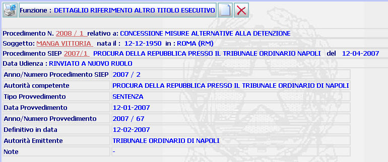

DETTAGLIO RIFERIMENTO ALTRO TITOLO ESECUTIVO: La funzione consente di visualizzare il dettaglio dell'ulteriore titolo esecutivo (procedimento Siep) assegnato al procedimento Sius.
LE MASCHERE VIDEO
La funzione viene realizzata attraverso la maschera seguente in cui compare il dettaglio dell'ulteriore titolo, comprensivo di tutte le indicazioni inserite attraverso la maschera precedente.

COME FARE PER ...
| Per visualizzare il dettaglio del procedimento Sius l'utente deve cliccare sul link relativo all'Anno/Numero del procedimento Sius evidenziato in rosso; |

| Per visualizzare il dettaglio del soggetto l'utente deve cliccare sul link relativo al cognome/nome del soggetto evidenziato in rosso; |

| Per visualizzare il dettaglio del procedimento Siep l'utente deve cliccare sul link relativo all' Anno/Numero del procedimento Siep evidenziato in rosso; |

|
Per
cancellare dal procedimento Sius il
titolo inserito
l'utente deve
cliccare sul pulsante
|
|
Per inserire un
ulteriore titolo esecutivo, l'utente deve cliccare sul pulsante
|
PULSANTI
Oltre ai pulsanti
 e
e
 , facenti parte del gruppo di
pulsanti di "Uso Comune" sono
presenti i seguenti pulsanti:
, facenti parte del gruppo di
pulsanti di "Uso Comune" sono
presenti i seguenti pulsanti:
|
PULSANTE |
DESCRIZIONE |
|
|
Selezionando questo pulsante è
possibile inserire un ulteriore titolo |